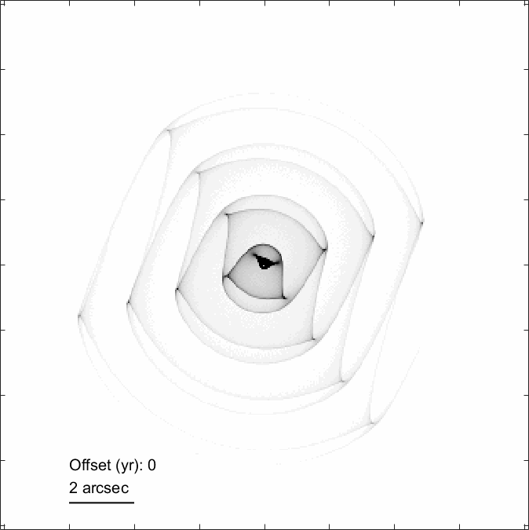
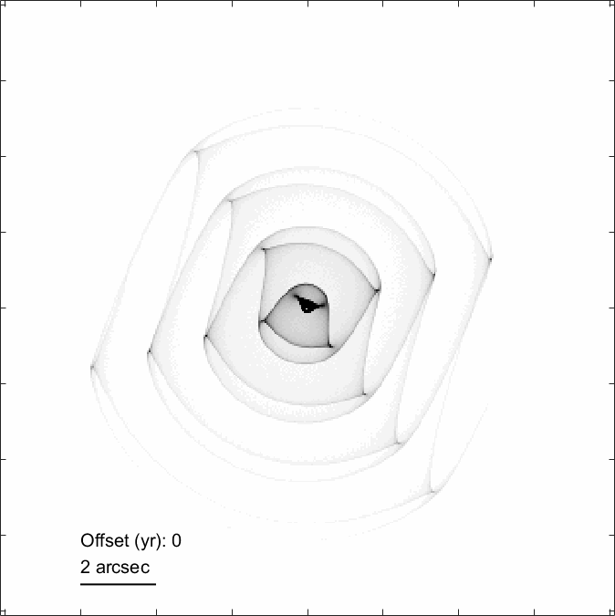

Home page
Welcome to my research home page, which outlines some of my research interests and recent projects.
I work primarily on planetary and stellar astrophysics. Current topics of interest mostly work towards understanding the past and future of planetary systems like our Solar System, and how stars eject dust towards the end of their evolution and replenish material in their neighbourhood, which may go on to form a new generation of stars and planets. You are welcome to explore this website and read more about my work.
Both planetary systems and evolved stars can create dusty environments due to a range of astrophysical processes, which we can image with observatories that offer sufficiently high spatial resolution and sensitivity at the appropriate wavelength. You can read more about how we interpret these images in corresponding publications available for download here.
 

News
[Oct 2024] I have moved to Caltech. Please use my updated contact details if you would like to get in touch.